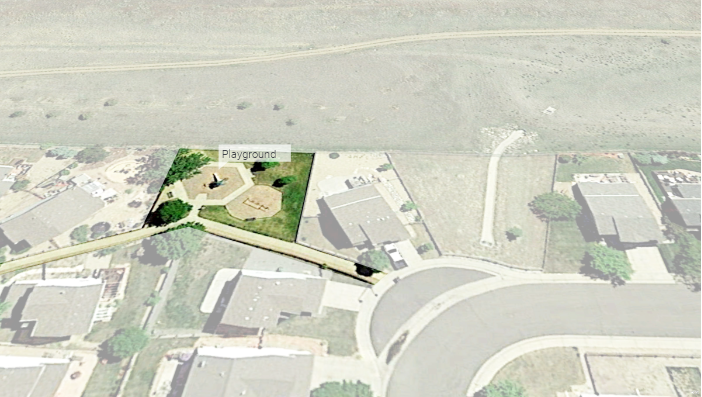

Introduction
Existing Parks Assessment
Open Space
Parks
The District currently consists of one large community park, which serves all residents of the District, and six neighborhood parks scattered throughout the District that provide smaller amenities to their closely adjacent homes. Neighborhood parks mostly contain a playground for small children and some seating areas. The parks in the District all have different styles of furnishings and play equipment for singular age groups, and limited access for children with disabilities.
East District has a total of 4 neighborhood parks: Crystal Lake Park, Mule Deer Park, Airplane Park and Marmot Ridge Park. Crystal Lake Park and Mule Deer Park are owned by Arrowhead Shores HOA, whereas Airplane Park and Marmot Ridge Park are owned by the District.
West District has Imperial Park that is owned by the District, and Northern District has Chatfield Farms Park that belongs to Chatfield Farms 1A HOA. While some neighborhood parks are not under direct ownership of the District, the District has formed agreements with the HOAs to maintain all parks in RVMD.
Site visit and evaluations were conducted in the Spring of 2019 as part of the master plan process. Each park element is ranked on a 3 star system.
- Poor Condition
- Average Condition
- Good Condition

Roxborough Community Park
Roxborough Community Park is a 18 acre park located centrally within the District on Rampart Range Rd. The park includes several active and passive amenities, two parking areas, a small pond, and greenway along Little Willow Creek.

Trails
Condition:
Trail surfacing in good condition. Some segments of the trail do not meet ADA requirement.
Furnishing
Condition:
Majority of the benches in decent condition. Picnic tables in poor condition. Various styles of trash receptacles in the park.
Shelter
Condition:
Outdated shade structure in poor condition. Limited visibility looking in and out of the shelter. Picnic tables in poor condition.
Basketball Court
Condition:
Concrete surface in good condition. Ground marking is barely visible. Fencing around the court is too close and may impede user mobility. Bottom of the fence is loose and curls up near basket area.
Playground
Condition:
Play structure in decent condition. Playground edging in decent to poor conditions. Inconsistent site furnishing styles.
Softball Field
Condition:
Field and bleachers In good condition. Missing ADA access to the field and bleachers. Storage behind home base is not in good condition and is rusty. Inconsistent trash receptacle styles. Outfield turf has inherent problems and is difficult to maintain in good condition.
Volleyball Court
Condition:
Court in very poor condition. Missing volleyball net and sand surfacing is covered with vegetation, making the court non-usable.
Skate Park
Condition:
In good to decent condition. Some chips in concrete coping. Graffiti writing on the ground.
Chatfield Farms Park*
Chatfield Farms Park is a 5 acre park located on the north edge of the District on Liverpool Road. This park includes a playground on the upper level, closer to the road and parking lot, and a soccer field at the lower level.
* Park owned by HOA and maintained by RVMD

Furnishing
Condition:
Benches in good condition. Picnic tables in poor condition. And various styles of trash receptacles in the park.
Playground
Condition:
Play structure, edging, and surface in good conditions.
Soccer Field
Condition:
Soccer field in good condition with ADA access to the field.
Shelter and Walls
Condition:
Shelter in good condition. Walls are missing facade.
Crystal Lake Park**
Crystal Lake Park is an 11.6 acre park located on the west side of the District, within Arrowhead Shores HOA. This park surrounds Crystal Lake and has two playgrounds and one shelter.
** Owned and maintained by HOA, not RVMD.

Lake
Condition:
Lake edges have some erosion. Overall in good condition.
Playground
Condition:
Play structure, edging, and surface in good conditions.
Shelter
Condition:
Shelter in good condition. Surface concrete in decent condition with some cracks.
Park Access
Condition:
Trail surface in good condition. Majority of access paths to the park do not meet ADA standards.
Imperial Park
Imperial Park is a 0.66 acre park located at the northwest corner of Village Circle West and Stacy Place. The park includes one playground and one small seating area. The park is generally flat and consists of irrigated bluegrass turf, with park perimeter surrounded by mature deciduous and evergreen trees.

Furnishing
Condition:
Benches in good condition. Various styles of site furnishing.
Playground
Condition:
Play structure, edging, and surface in good conditions. Grade separation at play structure is not ideal access for children with disabilities.
Park Edge
Condition:
Park surrounded by roads on 3 sides. No fencing around the park.
Marmot Ridge Park
Marmot Ridge Park is a 1.65 acre park located along the south side of Marmot Ridge Circle. The park includes a playground and a bench. The park is mostly covered with irrigated bluegrass turf.

Trail
Condition:
Path ends abruptly and does not go around play structures. Significant cracks on concrete path.
Playground
Condition:
Play structure, edging, and surface in good conditions.
Mule Deer Park*
Mule Deer Park is a 0.4 acre park located on the east side of Mule Deer Place. This park includes a playground and a bench.
* Park owned by HOA and maintained by RVMD

Furnishing
Condition:
Signage pealing off. Bench in poor condition and the park does not have a trash receptacle.
Playground
Condition:
Playground in decent condition. Plastic surface is peeling in some area.
Lawn
Condition:
Lawn turf in good condition, with some patches of hitchhiker weed.
Airplane Park
Airplane Park is a 0.15 acre park located between Mountain Circle and Brown Bear Court. This park includes a playground and some benches. The park is set back and surrounded by houses; the park is not visible from the roads.
Trail
Condition:
Concrete path in good condition and wraps around play structure for access.
Playground
Condition:
Play structure, edging, and surface in good conditions.